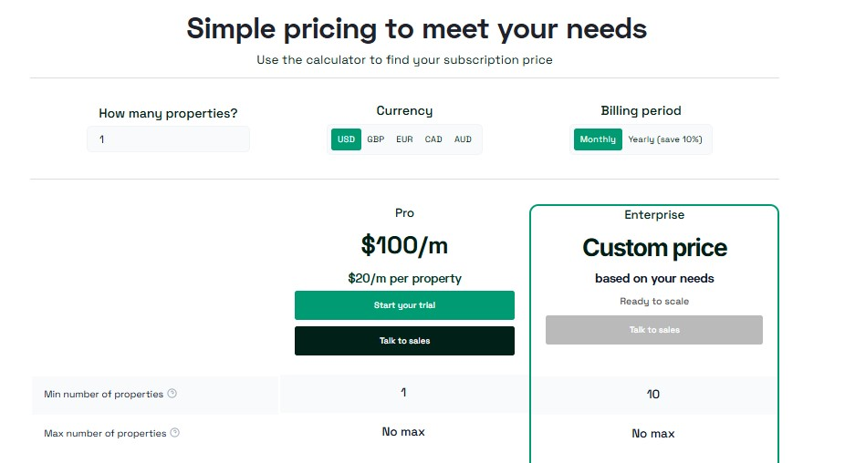

Vacation Rental Software and Channel Management System
Best Vacation Rental Software
Vacation Rental hosts often wrestle with fragmented bookings across platforms, manual guest messaging and cleaning logistics, inconsistent pricing, and the constant risk of double-bookings.
Uplisting centralizes channels and calendars, automates guest communication, cleaning schedules and pricing (smart rates), and provides a direct-booking engine plus integrations , cutting manual work and boosting revenue.

Uplisting is an all-in-one vacation-rental property management system (PMS) and channel manager that helps short-term rental hosts and property managers sync listings across OTAs (Airbnb, Booking.com, Vrbo), manage bookings, automate guest messaging, handle payments and cleaning schedules, and run a direct-booking site.
Features
- Channel manager (official API integrations with Airbnb, Booking.com, Vrbo) and iCal fallbacks.
- Multi-calendar and unified booking management across OTAs.
Direct-booking website builder + payment links and guest payment plans. - Automated guest messaging, templates, and check-in automation.
- Cleaning / work-order scheduler and owner statements (reporting).
Public API and integrations (smart locks, payment processors, etc.).
Pros
- Clean, modern UI and easy onboarding — many users praise the UX and how quickly it lets teams get up and running.
- Official API connections to major OTAs reduce double-booking risk and improve reliability versus simple iCal setups.
Good value for money for small/medium managers — pricing positioned for SMBs and reviews frequently call out strong ROI. - (Plans start from roughly $100/month depending on property counts/features).
- Responsive support claimed by many customers — Trustpilot/G2 show many 5-star experiences praising support staff.
Cons
- Some mixed reviews on support and reliability , while many praise support, there are a number of negative reviews reporting slow responses or issues during migration (so experiences vary).
Pricing

Prices start at $100 and include several different currencies for payment.
Who it’s best for
- Small to mid-size property managers and independent hosts who want a reliable channel manager + PMS with a strong UX, easy direct-booking support, and sensible pricing .
- especially if you value official OTA integrations and automation over heavy enterprise accounting features.
Final verdict
Uplisting is a solid, value-focused PMS/channel manager that excels at syncing listings, automating operations, and enabling direct bookings for SMB property managers.
If you run a handful to a few dozen properties and want a reliable, easy-to-use system without the enterprise price and complexity, Uplisting is well worth evaluating.
If you run a large portfolio with complex accounting/team needs, compare it against enterprise options (Guesty, Hostaway) before deciding.